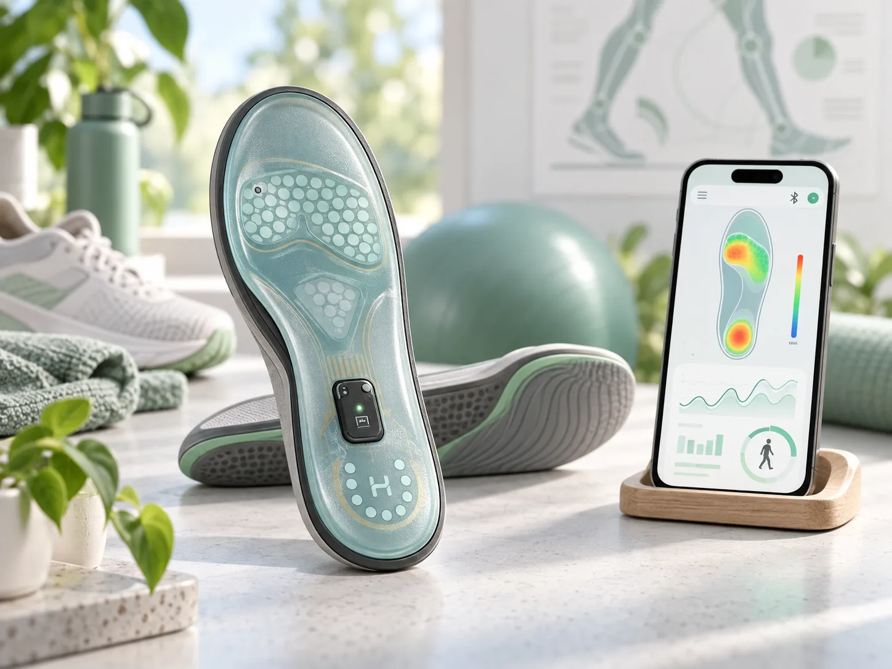
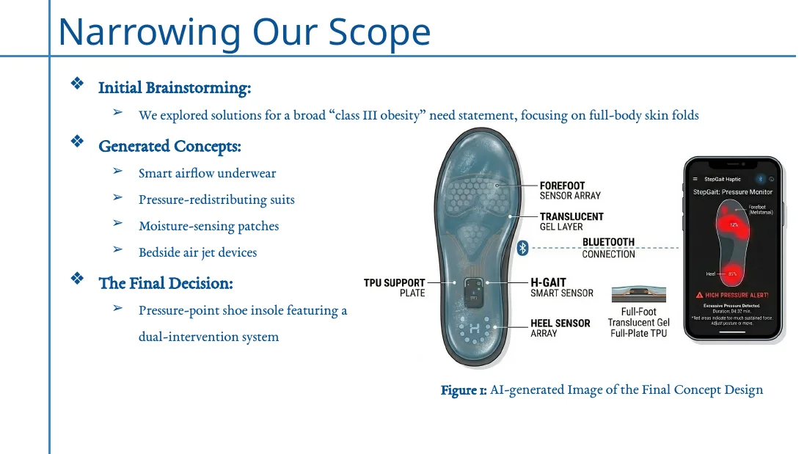
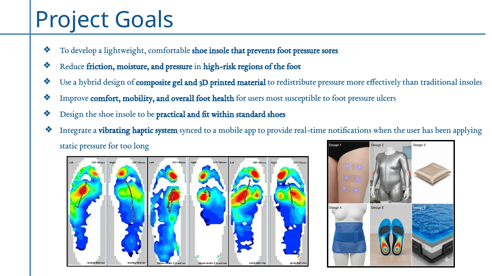
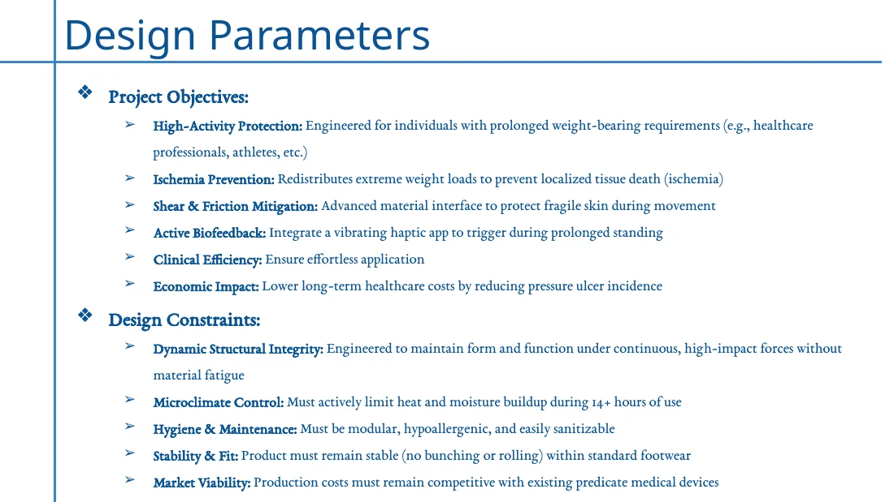
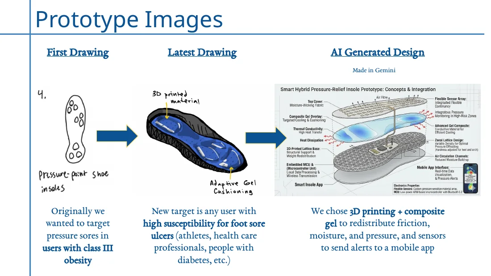
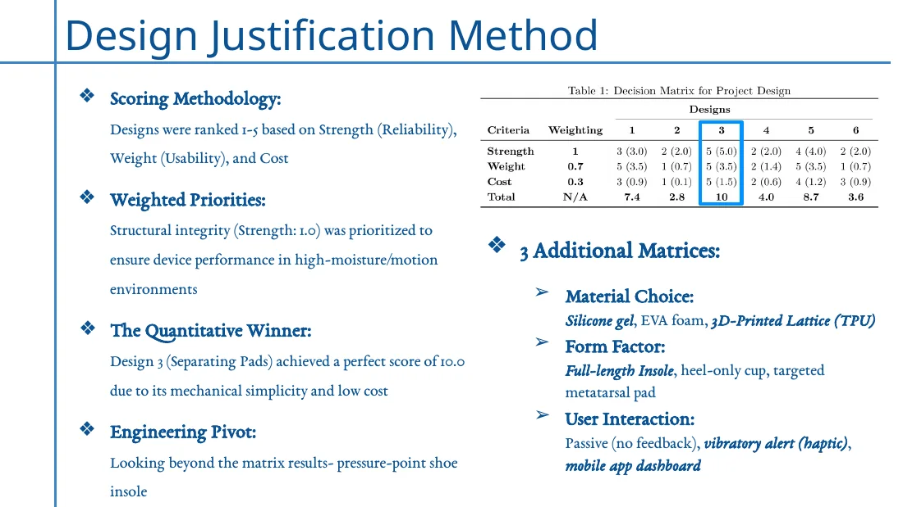

Clinical need
The project focused on preventing foot pressure injuries in people at higher risk of pressure ulcers.
Biomedical Design + Biomechanics
Smart-insole concept aimed at reducing pressure, friction, and moisture in high-risk areas of the foot while providing haptic feedback.

The project focused on preventing foot pressure injuries in people at higher risk of pressure ulcers.
A layered insole combines composite gel and 3D-printed material to redistribute pressure within standard footwear.
A haptic alert and mobile-app concept were proposed for prolonged static pressure.
Structural integrity, microclimate control, hygiene, stable fit, comfort, and market viability were treated as design constraints.
Decision matrices compared strength, usability/weight, cost, material choice, form factor, and user interaction.
The scope expanded beyond one population to people with high susceptibility to foot sores, including athletes, healthcare professionals, and people with diabetes.
Project archive
This material stays inside the case study so the main portfolio pages remain clean.




